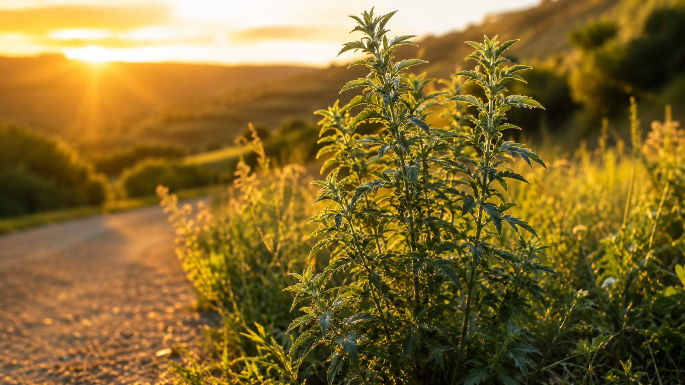
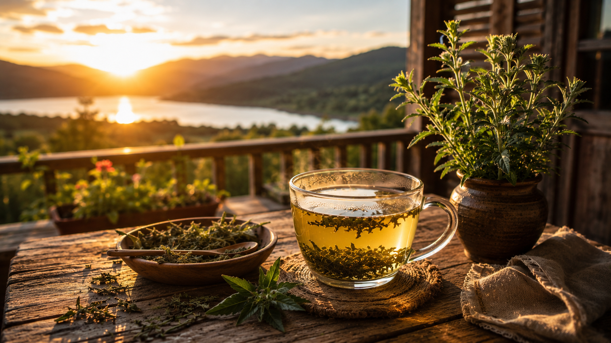

¿Qué es la Altamisa?
La altamisa es una planta medicinal conocida desde tiempos antiguos. Ha sido utilizada tradicionalmente en distintas culturas por sus propiedades naturales y su importancia en la medicina popular.



Artemisia Vulgaris
La Planta Medicinal Ancestral

La altamisa es una planta medicinal conocida desde tiempos antiguos. Ha sido utilizada tradicionalmente en distintas culturas por sus propiedades naturales y su importancia en la medicina popular.

La altamisa posee tallos firmes y hojas verdes por arriba y blanquecinas por debajo. Puede crecer en diferentes ambientes y destaca por su resistencia. Cuando alcanza su desarrollo completo puede superar un metro de altura y formar grupos de vegetación muy llamativos.

Ayuda a la digestion, tiene efecto antiespasmódico, propiedades antiinflamatorias, algunas personas la toman para relajarse o aliviar dolores menstruales.

Esta planta crece en varias partes del mundo, incluyendo a Chile en lugares como Alto Bio Bio. Prefiere lugares soleados y suelos bien drenados y Aparece en caminos, terrenos bien abiertos, praderas y zonas con buena exposición al sol.

Sus flores son pequeñas y aparecen agrupadas en la parte superior de la planta durante la época de floración.

Una de las formas más conocidas de uso tradicional es la infusión preparada con partes de la planta. (este remedio casero se ha transmitido de generación en generación y seguirá siendo parte de la cultura y tradición)

Una planta medicinal con historia y tradición.